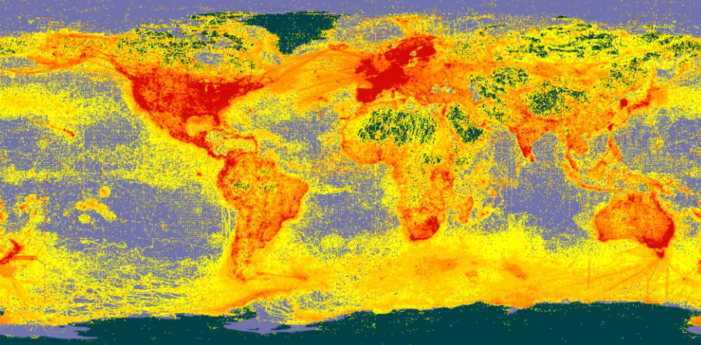

3 Quarto
3.1 Resumen
Quarto es un sistema de publicación de documentos técnicos y científicos, basado en código abierto. Estos documentos combinan código fuente en varios lenguajes de programación y sus salidas (ej. tablas, gráficos, mapas), con la sintaxis de Markdown.
En este capítulo, se estudia la sintaxis básica de Quarto y se presentan algunas de sus herramientas para la escritura de documentos.
3.2 Trabajo previo
3.2.1 Instalación de software
Quarto puede instalarse como una biblioteca del sistema operativo. Además, varios editores de texto y entornos integrados de programación (ej. VS Code, RStudio, Vim) pueden configurarse para crear documentos Quarto.
En este curso, se utilizará RStudio, que a partir de la versión v2022.07 tiene incorporados los componentes necesarios para trabajar con Quarto.
3.2.2 Tutoriales
3.3 Descripción general
Quarto es un sistema de publicación de documentos técnicos y científicos, basado en código abierto. Entre sus principales capacidades están:
- Crear contenido dinámico con los lenguajes R, Python, Julia y Observable.
- Crear documentos Markdown de texto plano o cuadernos de notas de Jupyter.
- Publicar artículos académicos, reportes, presentaciones, sitios web, blogs y libros en HTML, PDF, MS Word, ePub y otros formatos.
- Crear contenido científico, incluyendo ecuaciones, citas bibliográficas, referencias cruzadas, figuras y otros elementos.
Quarto fue anunciado oficialmente por Posit (anteriormente, la Fundación RStudio) en julio de 2022, como la siguiente generación de R Markdown, un formato que permite insertar código en R, y sus salidas, en documentos escritos en Markdown. R Markdown fue introducido por Yihui Xie en 2012, junto con el paquete knitr, cuyo propósito es facilitar la investigación reproducible en R a través de la programación literaria (literate programming), un paradigma de programación propuesto por Donald Knuth en 1984.
Los programas “literarios” (o “letrados”) están escritos como una exposición lógica en un lenguaje humano similar a la explicación de las fórmulas y ecuaciones empleadas para representar y resolver un problema en un texto de física o de matemáticas. En estos programas, se describe el análisis del problema, su solución y su implementación, intercalando código fuente entre los párrafos (y otros contenidos como imágenes, tablas, gráficos estadísticos y mapas), de forma similar a como en los textos de matemáticas se intercalan las fórmulas y las ecuaciones. La programación literaria puede mejorar enormemente un programa, ya que permite documentar ampliamente en qué consiste el problema a resolver, cómo se resuelve, cómo y por qué se adoptó cierto diseño, cómo se optimizó y cómo se implementó en un lenguaje de programación.
3.4 Anatomía de un documento Quarto
Un documento Quarto tiene tres tipos de contenido:
- Metadatos en YAML.
- Narrativa en Markdown.
- Bloques de código fuente.
3.4.1 Metadatos en YAML
Todo documento Quarto inicia con un encabezado en la sintaxis YAML (YAML Ain’t Markup Language), el cual contiene metadatos del documento como el título, el autor, la fecha de creación, el formato de salida y la estructura de la tabla de contenidos, entre muchos otros.
Un encabezado YAML comienza y termina con tres guiones (---) y contiene un conjunto de campos y valores de la forma:
---
campo01: valor01
campo02: valor02
campo0n: valor0n
---Por ejemplo, un encabezado YAML típico puede ser el siguiente:
---
title: Mi primer documento Quarto
format: html
editor: visual
---Los campos del encabezado pueden anidarse con sangrías de dos espacios como, por ejemplo:
---
format:
html:
toc: true
toc_float: true
---Los elementos de metadatos que pueden especificarse en el encabezado, pueden variar de acuerdo al formato de salida, como puede verse en los siguientes enlaces:
Existen elementos de metadatos para muchos otros formatos de salida (OpenOffice, ePub, presentaciones, wikis, etc.), como puede apreciarse en la Referencia de Quarto.
3.4.2 Narrativa en Markdown
La narrativa proporciona estructura y contenido al documento en la forma de encabezados, párrafos, enlaces y otros elementos de la sintaxis de Markdown.
3.4.3 Bloques de código fuente
En Quarto, los bloques (chunks) de código fuente se delimitan con tres backticks, tanto al inicio como al final del bloque. Los bloques en R se identifican con {r} y se configuran con diferentes opciones que inician con #|. Los bloques de otros lenguajes de programación se identifican con {python} y {julia}, por ejemplo.
El siguiente es un ejemplo de bloque de código en R y su salida:
```{r}
#| label: graficacion-cars
#| include: true
#| echo: true
plot(
x = cars$speed,
y = cars$dist,
main = "Velocidad vs distancia de frenado",
xlab = "Velocidad (mph)",
ylab = "Distancia (pies)"
)
```La opción label se utiliza para etiquetar el bloque. La de include para especificar si se desea que el bloque y sus resultados se incluyan en el documento de salida. Por su parte, echo indica si el código fuente debe desplegarse o no.
3.5 ¿Cómo funciona Quarto?
Quarto se apoya en knitr y en Pandoc. knitr ejecuta el código en R (u otro lenguaje) y convierte los documentos a Markdown. Por su parte, Pandoc exporta los documentos Markdown al formato de salida deseado (ej. HTML, PDF, MS Word, MS PowerPoint). Este proceso se ilustra en la Figure 3.1.

3.6 Herramientas para escritura
3.6.1 Figuras
3.6.1.1 Sintaxis básica
En su forma más básica, una figura puede crearse en Quarto con la misma sintaxis de Markdown (específicamente Pandoc Markdown).

Nótese como el texto entre paréntesis cuadrados se despliega al pie de la figura. En algunos formatos de salida (ej. PDF, LaTeX), las figuras se numeran automáticamente.
3.6.1.2 Tamaño
Por defecto, las figuras se despliegan con su tamaño nativo. Este puede modificarse con los atributos width y height, los cuales utilizan pixeles como unidad de medida por defecto.
{width=300}
Si se usa solo uno de los atributos, el otro se ajusta automáticamente. Pueden usarse otras unidades de medida como porcentajes, pulgadas o milímetros.
{width=80%}
{height=3in}
{height=76.2mm}
3.6.1.3 Enlaces
Una figura puede funcionar como un enlace a otro documento. La dirección del enlace se escribe entre paréntesis redondos.
[{height=50mm}](https://es.wikipedia.org/wiki/Panthera_onca)
3.6.1.4 Alineación
La alineación por defecto de las figuras es en el centro. Se pueden elegir otras alineaciones mediante el atributo fig-align.
{fig-align="right" height=50mm}
{fig-align="left" height=50mm}
3.6.1.5 Referencias
Para crear referencias a figuras, deben identificarse con el prefijo fig-. Luego, pueden referenciarse con el prefijo @. Por ejemplo:
Actualmente, el portal de datos de la Infraestructura Mundial
de Información en Biodiversidad (GBIF) agrupa más de
dos mil millones de registros de presencia de especies,
cuya distribución espacial puede observarse en la @fig-mapagbif.
{#fig-mapagbif}Actualmente, el portal de datos de la Infraestructura Mundial de Información en Biodiversidad (GBIF) agrupa más de dos mil millones de registros de presencia de especies, cuya distribución espacial puede observarse en la Figure 3.2.

3.6.1.6 Grupos de figuras
Para mostrar varias figuras como un grupo, puede crearse una división (div) con los caracteres :::, al inicial y al final. Por ejemplo:
::: {#fig-felinos-grandes-costarica layout-ncol=2}
{#fig-jaguar}
{#fig-puma}
Felinos más grandes de Costa Rica
:::
El atributo layout-ncol especifica el número de columnas.
::: {#fig-felinos-costarica layout-ncol=2}
{#fig-jaguar}
{#fig-puma}
{#fig-manigordo}
{#fig-yaguarondi}
{#fig-caucel}
{#fig-tigrinus}
Todos los felinos de Costa Rica
:::


Para más detalles sobre figuras, se recomienda consultar Quarto - Figures.
3.6.2 Citas bibliográficas
Quarto puede generar citas bibliográficas y bibliografías en un varios estilos. Para esto, es necesario:
- Un documento Quarto con citas (vea Citation Markdown).
- Una fuente de datos bibliográfica como, por ejemplo, un archivo BibLaTeX (
.bib) o un archivo BibTeX (.bibtex). - Opcionalmente, un archivo CSL (
.csl) para formatear las citas y la bibiografía.
3.6.2.1 Archivos bibliográficos
El archivo (o los archivos) bibliográficos que utiliza un documento, se especifican en la sección de YAML, mediante el campo bibliography. Por ejemplo:
---
title: "Felinos"
bibliography: bibliografia/referencias.bib
---En Pandoc - Citations puede encontrar más información sobre los formatos bibliográficos. También puede ver aquí un ejemplo de archivo .bib.
3.6.2.2 Sintaxis de las citas
Las citas se especifican con el prefijo @. Por ejemplo:
La familia *Felidae* tiene 36 especies [@lamberski_felidae_2015].Genera la siguiente salida:
La familia Felidae tiene 36 especies (Lamberski, 2015).
Para más información sobre las variaciones en la sintaxis de las citas, se recomienda consultar Citation Syntax.
3.6.2.3 Estilo de las citas
Por defecto, Quarto utiliza el Manual de estilo Chicago, pero puede usar cualquier estilo definido mediante Citation Style Language (CSL). El archivo CSL que se utiliza debe especificarse en la sección YAML con el campo csl.
---
title: "Felinos"
bibliography: bibliografia/referencias.bib
csl: bibliografia/apa-6th-edition.csl
---Pueden encontrarse archivos CSL ya definidos en el repositorio central del Proyecto CSL o en el repositorio de estilos de Zotero.
Para más información sobre los estilos de las citas, se recomienda consultar Citation Style.
3.6.2.4 Generación de bibliografía
La lista de recursos citados se genera en una división con la identificación refs. Por ejemplo:
### Referencias
::: {#refs}
:::Si no encuentra esta división en el documento, Quarto generará la bibliografía al final de este.
Para más detalles sobre citas bibliográficas en Quarto, se recomienda consultar Quarto . Citations & Footnotes.
3.7 Ejemplo de documento Quarto
- Sitio en GitHub Pages: https://mesa-monitoreo-puntos.github.io/felinos/
- Código fuente: https://github.com/mesa-monitoreo-puntos/felinos
3.8 Ejercicios
- Desarrolle en documento Quarto con un tema de su elección y publíquelo en GitHub Pages. Se recomienda seguir los siguientes pasos:
- Cree un nuevo proyecto en RStudio.
- Cree un documento Quarto con nombre
index.qmdque incluya, al menos:- Texto.
- Varios niveles de encabezados.
- Enlaces.
- Figuras y referencias a estas.
- Citas bibliográficas.
- Genere el archivo
index.html. - Cree un nuevo repositorio en GitHub y suba los archivos
index.qmdeindex.html. - Publique el repositorio como un sitio GitHub Pages.